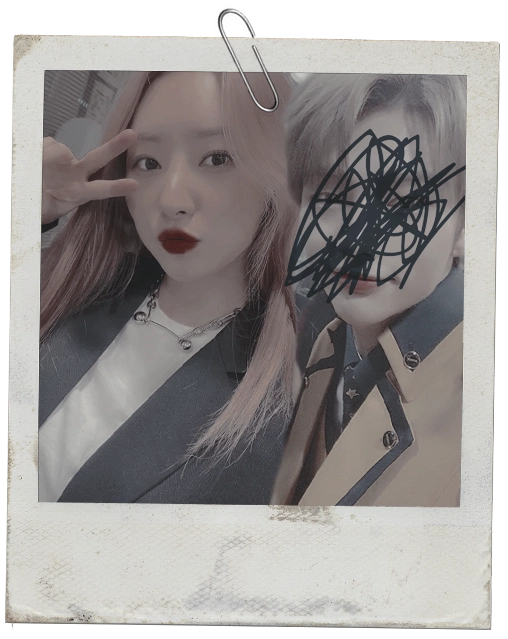

—¿¿IVYYYYYY?? ¿¿IVY WALKER? ¡¿La misma Ivy Walker de 7*DREAMERS?!
Ha pegado un salto en el sitio al escuchar aquello, pero le ha hecho ilusión, no puede negarlo.
A él sí que le dedica una sonrisa sincera y un saludo amistoso.
—La misma que viste y calza.
Un muchachito rubio que no superaría la adolescencia se le acerca a toda prisa. Su cuerpo completo es la representación del nerviosismo. Tiembla como un flan y de los ojos, oscuros aun brillantes, nace una admiración apabullante que, de buenas a primeras, asusta a Terry. Nadie solía mirarla así. Mucho menos los chavales de la edad de este crío.
—¡Soy tu fan número uno, Ivy! Siempre has sido mi bias de 7*DREAMERS. Tengo todos vuestros álbumes, y he hecho colección de tus photocards.
¿Así era como se sentía Ivy? Una mezcolanza de emociones se le instalan en el pecho para estallar en la garganta. Ni siquiera es mérito suyo, pero este chico era su fan. Ahora es suyo. Y no puede decepcionarlo.
—¿Lo dices en serio? ¡Eres un amor! Siempre me gusta encontrarme con fans, sois quienes nos han puesto donde estamos y me siento muy agradecida, de verdad. —Entorna los ojos en su gesto entrañable y le ofrece la diestra— Me encantaría saber el nombre de mi mayor fan, ¡y ahora vecino!
El chico que antes había estado junto al «fan número uno», apartado junto a la mesa de licores, los observa con detenimiento. Hay algo extraño en su mirada. Ésta es burlona e incluso hay cierta expresión despectiva en su rostro, con los finos labios curvados en una mueca de desdén. Sus ojos están entrecerrados en una mirada desafiante. Terry sacude la cabeza, como si así pudiera librarse de los pensamientos ponzoñosos. ¿Y si solo se está imaginando esa actitud por su miedo a ser reconocida?
—¡Me llamo Hyuk, por cierto! Y he venido aquí con mi amigo Erik. Vivimos juntos en el Ático B.
—Hyuk, no voy a olvidarme. Yo estoy en el Ático C, así que si algún día necesitas sal... ¡Ya sabes dónde estoy!
—Le enternece sobremanera cómo le tiende la mano y con cuidado se la estrecha.
—Eh, ¿podemos hacernos una foto contigo? —pregunta el otro chico, con desgana.
Observa a Erik con detenimiento. Está a un pelo de decirle que no, pero confía en que Ivy no se negaría.
—¡Claro! Será un enorme placer.
El muchacho menor se aproxima a ella y le tiende al oído unas palabras susurradas:
—Él también es un gran fan tuyo, que no te engañen
sus pintas de niño emo. Estoy seguro de que él también quiere
hacerse una foto individual contigo.
—Sí, claro. —ladra el compañero.
Terry tiene ganas de tirar a Erik al suelo y golpearlo como si quisiera rendirse en un combate. Por el contrario, la atmósfera de complicidad que ha logrado Hyuk al acercarse y susurrarle eso ha podido con ella.
Aunque no baja la guardia. Eso jamás.
—Eso está hecho, Hyuk. ¿Te parece que sea ahora, en la fiesta? Así me inmortalizarás bien arreglada.
—¡Por supuesto!
—Me hace una ilusión que no imaginas, Hyuk —replicó; la atención de nuevo puesta en el muchacho—
Estoy segura de que seremos los más guapos de la noche.
